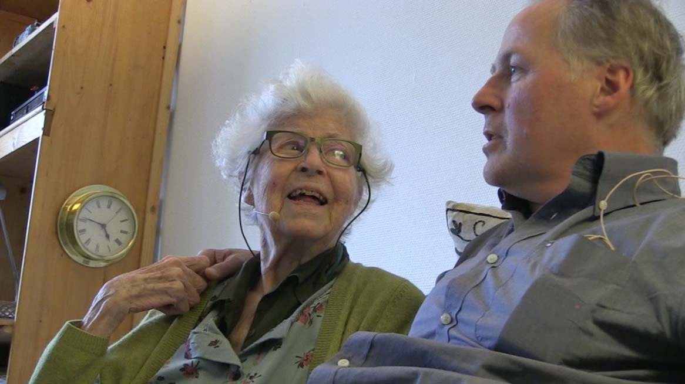

A study of a
man called Maarten.
I met him in the electronica shop where he works. I asked him for
advice on a thing I wanted to buy, but out of nowhere he started to
talk to me about women. That was fascinating to me. So I proposed to
meet at his house. This film is
the result of 3 meetings over a 2 month time span.
His main topic is women and what they are
doing to men. He is writing a book titled: 'The Amazon
Woman 2.0'. During the filming session his theories and thoughts about
woman are sort of supplemented by 3 things that happen during the
period of me filming
him.
1: His mother
I get the impression that his relationship with his mother is very
telling about the way he relates to women so I start filming her as
well. Then I discover that she is about to end her life. I'm interested
in the way Maarten deals with this.
2: A new daughter
He also discovers that he has a daughter of 21, and he feels
semi-betrayed by the mother who never told him about this.
3: Love
Finding new love. Falling in and out of love with various women. |
|

FILM IN PRODUCTION, LINK SOON
Note: I construct these films for a concentrated watch, watch
preferably on a larger screen with good sound. I didnt compress the
sound for mini speakers. There is actually a dynamic range in the
audio. Feel free to download the entire thing here.
So you might not be bothered by streaming stutters. DUTCH - NO ENGLISH SUBS YET.
|